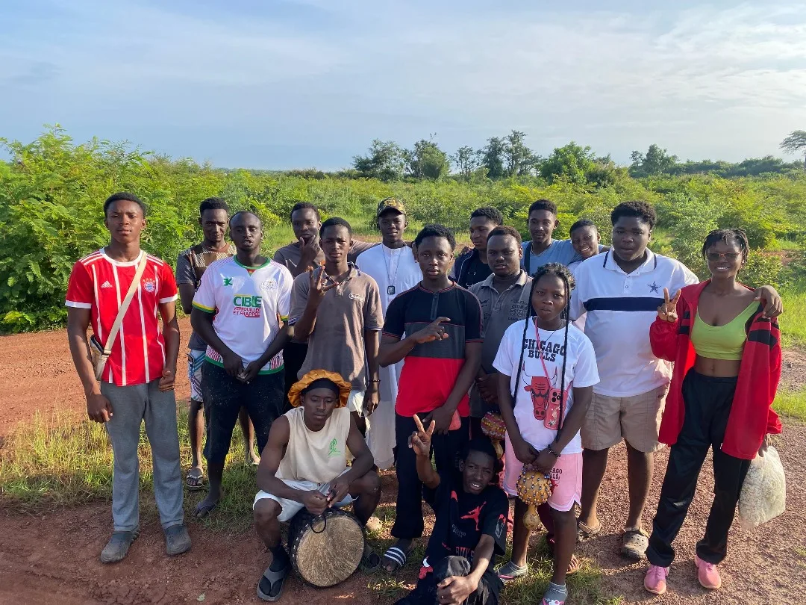
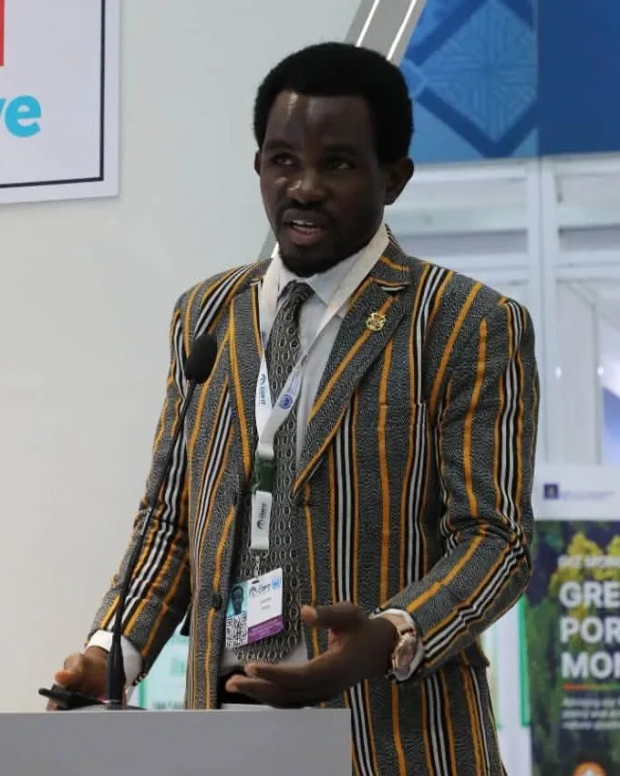

Mission
Promouvoir des solutions innovantes, durables et adaptées aux réalités locales face aux défis environnementaux et climatiques, en renforçant les capacités des communautés et l’engagement citoyen, en particulier des jeunes et des femmes.

À propos
L’ACIEA conjugue innovation, science et action de terrain pour relever les défis environnementaux du Burkina Faso et de l’Afrique de l’Ouest.
L’Alliance for Climate Innovation and Ecological Action (ACIEA) — Alliance pour l’innovation climatique et l’action écologique — est une organisation à but non lucratif basée à Ouagadougou, au Burkina Faso, créée en 2024.
Elle porte haut les valeurs de l’écologie, de l’innovation, de la salubrité et de l’énergie durable. Ses actions couvrent la lutte contre le changement climatique et l’adaptation, la gestion durable de l’eau, la protection de la biodiversité, l’innovation numérique, la recherche et l’éducation environnementale.
L’ACIEA œuvre aux côtés de partenaires nationaux et internationaux pour la protection de l’environnement et l’amélioration des conditions de vie des populations.

Mission
Promouvoir des solutions innovantes, durables et adaptées aux réalités locales face aux défis environnementaux et climatiques, en renforçant les capacités des communautés et l’engagement citoyen, en particulier des jeunes et des femmes.
Vision
Une transformation durable portée par l’innovation écologique, au service des communautés et de la planète, pour un Burkina Faso prospère, écologique et solidaire.
Mission, vision et valeurs
Protéger les écosystèmes et les ressources naturelles dont dépendent les populations.
Mobiliser la créativité, la science et le numérique pour des solutions nouvelles.
Promouvoir un cadre de vie sain, la gestion des déchets et l’assainissement.
Encourager des choix énergétiques sobres et respectueux de l’environnement.
Nos modes d’action
Notre histoire
Depuis sa création en 2024, l’ACIEA a multiplié les échanges avec les institutions nationales, les collectivités et les partenaires internationaux, tout en menant des actions de terrain auprès des jeunes. Les jalons ci-dessous sont documentés par des publications officielles.
Partenariat pour la gestion durable de l’eau, la résilience climatique et l’innovation numérique, autour de SAAGDO.
Source (s’ouvre dans un nouvel onglet)Domaines d’intervention
Contribuer à l’adaptation des territoires et des communautés aux effets du changement climatique, en conjuguant savoirs locaux, sensibilisation et solutions innovantes.
Œuvrer pour une gestion durable des ressources en eau et un meilleur assainissement, grâce à la surveillance environnementale et à la prévention des pollutions.
Préserver les écosystèmes et la biodiversité par le reboisement, la sensibilisation et la valorisation durable des ressources naturelles.
Mettre le numérique, la donnée et l’intelligence artificielle au service de l’action environnementale et de l’aide à la décision.
Ancrer l’action dans la connaissance : collecte de données, analyse et coopération avec les acteurs de la recherche.
Former, sensibiliser et mobiliser les jeunes et les communautés pour faire de chacun un acteur de la transition écologique.
Gouvernance
L’ACIEA est une organisation à but non lucratif dirigée par ses instances statutaires.
La composition détaillée des instances (assemblée générale, bureau exécutif) ainsi que les statuts et rapports d’activité seront publiés sur cette page après validation par l’Alliance.
Message du président
Le message officiel du président sera publié prochainement.
Notre équipe
Une équipe engagée de jeunes professionnels, chercheurs et acteurs de terrain.

Président
Vice-présidente
Secrétaire général·e
Documents institutionnels
Documents institutionnels
Les documents institutionnels (statuts, rapports d’activité) seront mis en ligne après validation.
Institutions, bailleurs, universités, entreprises, organisations communautaires : échangeons sur les synergies possibles.